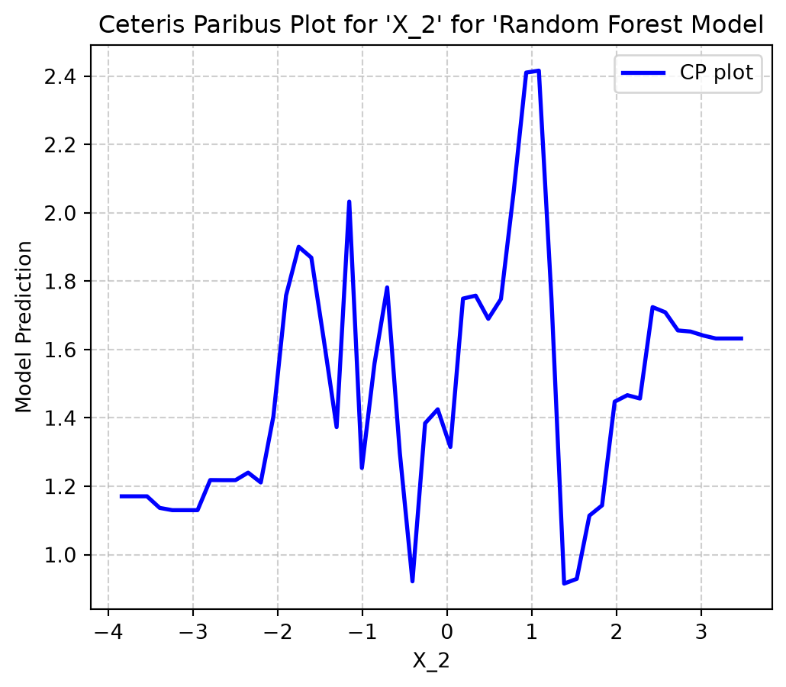
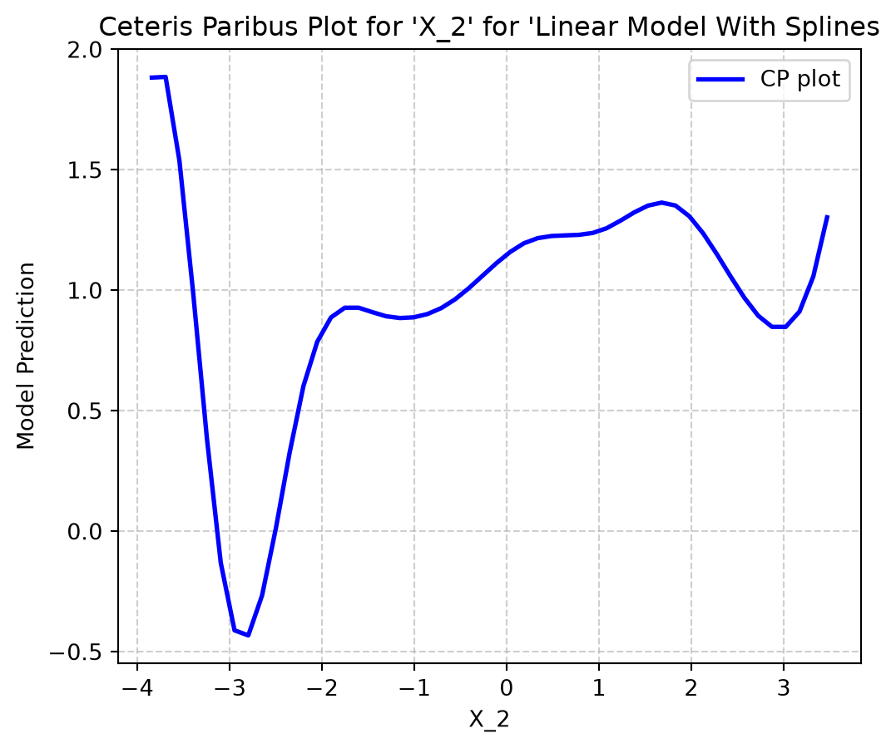
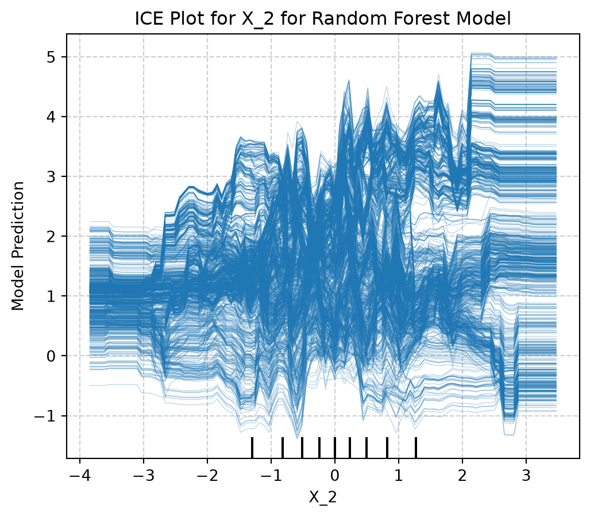
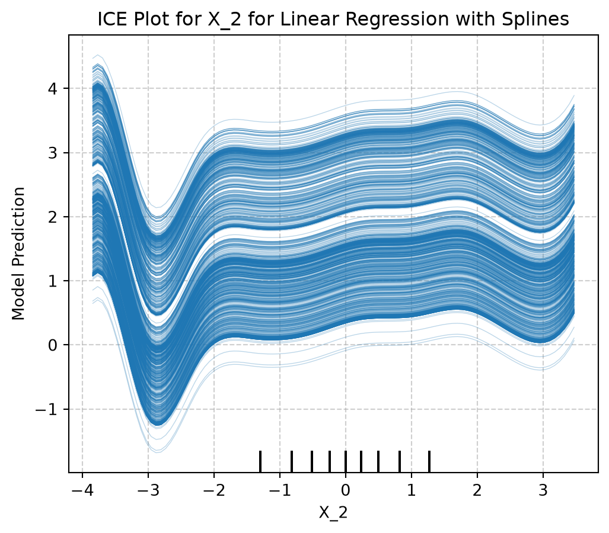
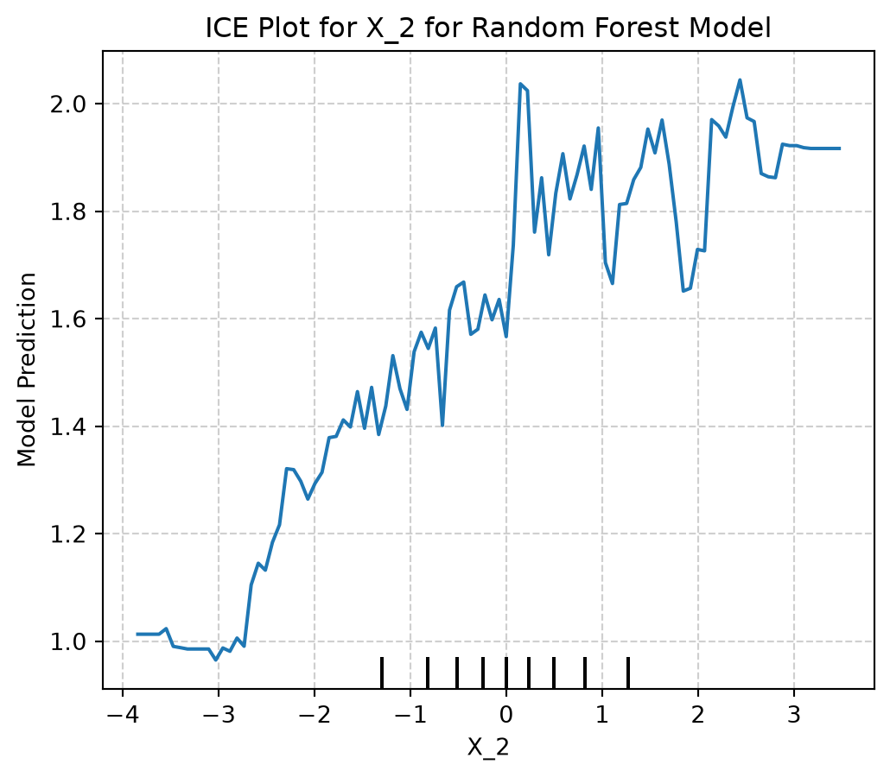
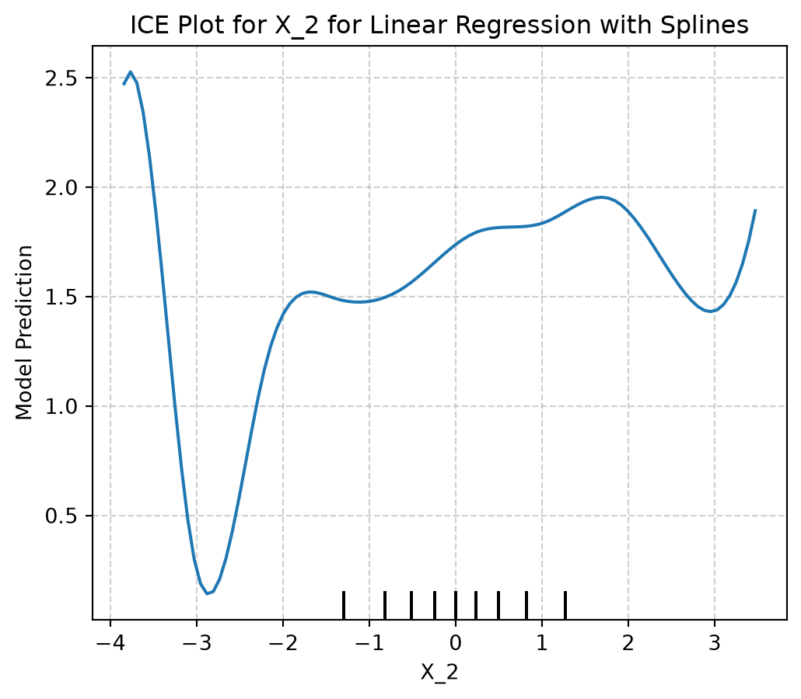

Ceteris paribus is Latin for “other things equal”.
Ceteris paribus (CP) plots:
Visualize how changes in a single feature change the prediction of a data point
Simple analysis technique
Model-agnostic, so can be used to compare models
Building blocks for Individual Conditional Expectation (ICE) curves and Partial Dependents Plots(PDP)
Comparison of Ceteris Paribus, ICE, and PDP from Interpretable Machine Learning by Christoph Molnar
ICE plots are CP plots containing all CP curves for an entire dataset. A PDP is the average of all CP curves of one dataset.
4.2 Algorithm
Let’s say input = Data point \({x}^{i}\) to explain feature \({j}\).
4.2.1 For numerical features:
Create equidistant value grid: \(z_1,...,z_K\) where typically \(z_1 = min(x_j)\)\(z_k = max(x_j)\)
For each grid value: \(z_k \in \{z_1,...,z_K\}\):
Create new data point: \(x^{(i)}_{j:=z_k}\)
Get prediction: \(\widehat{f}\left(x^{(i)}_{j:=z_k}\right)\)
Visualize the CP curves:
Plot line for data points \(\left\{z_l, \widehat{f}\left(x^{(i)}_{j:=z_l}\right)\right\}_{l=1}^{K}\)
Plot dot for original data point \(\left(x_k^{(i)}, \widehat{f}\left(x^{(i)}\right)\right)\)
The more grid values, the more fine-grained the CP curve, but the more calls you have to make to predict the function of the model.
4.2.2 For categorical features:
Create list of unique categories: \(z_1,...,z_K\)
For each category: \(z_k \in \{z_1,...,z_K\}\):
Create new data point: \(x^{(i)}_{j:=z_k}\)
Get prediction: \(\widehat{f}\left(x^{(i)}_{j:=z_k}\right)\)
Create bar plot or dot plot with categories on x-axis and predictions on y-axis.
4.3 Examples
4.3.1 Using random forest model to predict probability that a penguin is female
CP plot for probability of female vs. bill depth from Interpretable Machine Learning by Christoph Molnar
This example is for 2 classes, but could include more if we had them.
Scatter plot of body mass vs. bill depth from Interpretable Machine Learning by Christoph Molar
We need to keep in mind that changing a feature can break dependence with other features. For example, bill depth is correlated with body mass and flipper length. The above figure shows that the original data point is realistic when considering body mass, bill depth, and species. However, the new data point is not realistic when considering the combination of those three features.
4.3.2 Using Support Vector Machine (SVM) to predict number of rented bikes based on weather and seasonal info
Pick winter day with good weather and see how changing features changes the prediction. Create plots for all features.
How changing individual features changes predicted number of bike rentals from Interpretable Machine Learning by Christoph Molar
The feature that represents the biggest change in the prediction is the number of bikes rented 2 days before. Higher temps means more rentals up to a point.
Can also package CP plots into sparklines, minimalistic plot lines.
CP plots shown as minimal sparklines from Interpretable Machine Learning by Christoph Molnar
4.3.3 Additional Explanation
CP plots show how feature changes affect prediction. Comparing features side by side with shared y-axis allows us to see which feature has more influence on the data point’s prediction. Correlation between features is a concern, especially when interpreting CP curve far away from original feature.
We can also use CP plots for comparison of models to better understand how they treat features differently.
CP plots for bike prediction using different models from Interpretable Machine Learning by Christoph Molnar
4.3.4 Strengths
Simple to implement and understand
Can fix limitations of attribution methods - Attribution methods like SHAP or LIME don’t show how sensitive the prediction is to local changes. CP plots provide the complete picture.
Flexible building blocks - Can be used for interpretation. Can combine lines across models, classes, hyperparameter settings, and features.
4.3.5 Limitations
Only show one feature at a time - Don’t get to see how features interact without changing two features and plotting them.
Interpretation suffers when features are correlated - When this occurs, not all parts of the curves may be realistic. Can be alleviated by restricting plots to shorter ranges for correlated features. Need to know what these ranges are.
Careful with casual interpretation - Lower barrier to entry so these plots can be shown to non-experts.
4.4 Computation Plan
For this computation plan, I will develop a tutorial which explains each of the following visualization techniques:
Partial effect (Ceteris Paribus) plots
Partial dependent plots
Individual conditional expectation plots
Acumulated local effect plots
For each plot type, I will describe the following:
Motivating ideas of each plot
How to implement each plot
How to use and interpret each plot
I will use the following two model types: random forest model and linear regression with splines.
4.5 Computation
First, a simulated dataset was created with the following model: \[
\begin{aligned}
E[Y \mid X] &= \sqrt{5}\,\operatorname{sigmoid}(X_1 + X_3)
+ \sqrt{5}\,\operatorname{sigmoid}(X_2)X_3 \\[6pt]
\operatorname{Var}(Y \mid X) &= 1 \\[6pt]
\text{where}\qquad
X_1, X_2 &\sim N(0,1) \\
X_3 &\sim \operatorname{Bernoulli}(p=0.4) \\
\operatorname{sigmoid}(x) &= \frac{1}{1+e^{-x}}
\end{aligned}
\]
The X_1, X_2, and X_3 features were created based on the model. A dataset, X, of with an assumed 1,000 observations was created.
import numpy as npimport pandas as pdnum_obs =1000# create X_1 and X_2 features based on normal distribution with mean=0 and std=1 X_1 = np.random.normal(loc=0, scale=1, size=num_obs)X_2 = np.random.normal(loc=0, scale=1, size=num_obs)# create X_3 feature based on bernoulli, with p=0.4.X_3 = np.random.binomial(n=1, p=0.4, size=num_obs)# create datasetX = pd.DataFrame(np.column_stack([X_1, X_2, X_3]), columns = ["X_1", "X_2", "X_3"])X.head()
X_1
X_2
X_3
0
1.647075
-0.472759
0.0
1
1.733803
0.401015
0.0
2
0.721935
0.065244
0.0
3
0.715162
-0.526192
1.0
4
-0.638736
-0.205658
0.0
Next, the signoid function was defined for use in creating Y.
def sigmoid(x):return1/ (1+ np.exp(-x))
Finally, the target values were developed from the expectation of Y given X and normally distributed error with variance of 1.
Next the two models were created and fitted. The random forest model was assumed to have 250 trees in which the data is split.
Several hyperparameters were assumed in the linear model with splines. Knots are the points that separate splines. 10 knots were assumed in this model. The degree hyperparameter controls the degree of the polynomial spline between the knots. Degree=3 was assumed so that the splines are cubic functions. Extrapolation was assumed to be linear outside of the training range. A value of 0.001 was assumed for the Ridge regression factor, alpha.
# create random forest modelfrom sklearn.ensemble import RandomForestRegressormodel_forest = RandomForestRegressor(n_estimators=250, random_state=1)model_forest.fit(X, Y)# create linear model with splines. from sklearn.pipeline import make_pipelinefrom sklearn.preprocessing import SplineTransformerfrom sklearn.linear_model import Ridgemodel_spline = make_pipeline(SplineTransformer(n_knots=10, degree=3, extrapolation="linear"), Ridge(alpha=0.001))model_spline.fit(X, Y)
C:\Users\provi\AppData\Local\Python\pythoncore-3.14-64\Lib\site-packages\sklearn\base.py:1403: DataConversionWarning: A column-vector y was passed when a 1d array was expected. Please change the shape of y to (n_samples,), for example using ravel().
return fit_method(estimator, *args, **kwargs)
In a Jupyter environment, please rerun this cell to show the HTML representation or trust the notebook. On GitHub, the HTML representation is unable to render, please try loading this page with nbviewer.org.
The alpha hyperparameter controls the penalty in the loss function that discourages large regression coefficients. This is done to prevent the model from becoming overly sensitive to small changes in the predictors and can reduce overfitting. \[
\min_{\beta}
\left[
\sum_{i=1}^{n}(y_i-\hat{y}_i)^2
+
\alpha\sum_{j=1}^{p}\beta_j^2
\right].
\]
where:
- \(n\) is the number of observations.
- \(p\) is the number of predictor variables. (depends on number of transformed features)
- \(y_i\) is the observed response for observation \(i\).
- \(\hat{y}_i\) is the predicted response for observation \(i\).
- \(\beta_j\) is the regression coefficient for predictor \(j\).
- \(\alpha\) is the regularization parameter that controls the strength of the penalty on the regression coefficients.
A partial effects (Ceteris Paribus) plot was developed to visualize how the prediction of Y changes when X_1 and X_3 are held constant at their median values (assumed) and X_2 is allowed to vary over its observed range.
import matplotlib.pyplot as plt# define function for develop CP plotdef plot_ceteris_paribus(model, model_type_title, X, feature_name, grid_size=500):""" creates a ceteris paribus (CP) plot for a single feature, while holding other features constant at their median values """# calculate min and max values for selected feature min_val = X[feature_name].min() max_val = X[feature_name].max() grid_values = np.linspace(min_val, max_val, grid_size)# create DF row containing the median of each feature features_const = X.median().to_frame().T# create dataset where only the selected feature varies data_sel_feat_varies = pd.concat([features_const] * grid_size, ignore_index=True) data_sel_feat_varies[feature_name] = grid_values # calculate model predictions predictions = model.predict(data_sel_feat_varies)# develop CP plot plt.figure(figsize=(6, 5)) plt.plot(grid_values, predictions, label="CP plot", color="blue", lw=2) plt.xlabel(feature_name) plt.ylabel("Model Prediction") plt.title(f"Ceteris Paribus Plot for '{feature_name}' for '{model_type_title}") plt.grid(True, linestyle="--", alpha=0.6) plt.legend() plt.show()# run function for random forestplot_ceteris_paribus(model=model_forest, model_type_title='Random Forest Model', X=X, feature_name="X_2", grid_size=50)# run function for linear with splinesplot_ceteris_paribus(model=model_spline, model_type_title='Linear Model With Splines', X=X, feature_name="X_2", grid_size=50)


The partial effects plots show how the prediction of Y changes as X_2 varies while X_1 and X_3 are held constant at their median values. The shape and slope of the curves indicate how sensitive the models’ predictions are to changes in X_2. The random forest model produces a much more jagged curve than the linear model with splines because the random forest model includes predictions from many decision trees. The linear model with splines creates a much smoother relationship between the prediction and X_2.
Then, individual conditional expectation (ICE) plots were developed to show how the prediction of Y changes for each observation in the dataset when changing only one feature. In this case, X_1 and X_3 were held constant at their median values, and X_2 was allowed to vary along its observed range.
from sklearn.inspection import PartialDependenceDisplayimport matplotlib.pyplot as plt# use sklearn implementation of ICE plot# random forest model plotfig, ax = plt.subplots(figsize=(6, 5))display = PartialDependenceDisplay.from_estimator(estimator=model_forest, X=X, features=["X_2"], kind="individual", centered=False, percentiles=(0,1), ax=ax)plt.title('ICE Plot for X_2 for Random Forest Model')plt.ylabel("Model Prediction")plt.grid(True, linestyle="--", alpha=0.6)plt.show# linear regression with splines plotfig, ax = plt.subplots(figsize=(6, 5))display = PartialDependenceDisplay.from_estimator(estimator=model_spline, X=X, features=["X_2"], kind="individual", centered=False, percentiles=(0,1), ax=ax)plt.title('ICE Plot for X_2 for Linear Regression with Splines')plt.ylabel("Model Prediction")plt.grid(True, linestyle="--", alpha=0.6)plt.show


The ICE plots contain many more lines than the partial effects plots because they show predictions for each observation in the dataset. This helps to show the range of predictions across the dataset and how they vary as the X_2 feature changes. Since the random forest model produces a more jagged partial effects plot, the lines in its ICE plot overlap and are therefore more difficult to distinguish. The linear model with splines produces nearly parallel lines which are much easier to interpret.
Finally, a partial dependence plot (PDP) was developed to show an average of the ICE plots for both models.
from sklearn.inspection import PartialDependenceDisplayimport matplotlib.pyplot as plt# use sklearn implementation of PDP plot# random forest model plotfig, ax = plt.subplots(figsize=(6, 5))display = PartialDependenceDisplay.from_estimator(estimator=model_forest, X=X, features=["X_2"], kind="average", centered=False, percentiles=(0,1), ax=ax)plt.title('ICE Plot for X_2 for Random Forest Model')plt.ylabel("Model Prediction")plt.grid(True, linestyle="--", alpha=0.6)plt.show# linear regression with splines plotfig, ax = plt.subplots(figsize=(6, 5))display = PartialDependenceDisplay.from_estimator(estimator=model_spline, X=X, features=["X_2"], kind="average", centered=False, percentiles=(0,1), ax=ax)plt.title('ICE Plot for X_2 for Linear Regression with Splines')plt.ylabel("Model Prediction")plt.grid(True, linestyle="--", alpha=0.6)plt.show


The PDPs show the average of all of the ICE curves. These average curves are calculated by averaging the predictions across all observations at each value of X_2.